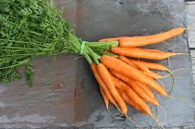

Carrot

Carrots are a root vegetable, typically orange in color, but also available in purple, black, red, white, and yellow varieties, and are a good source of beta-carotene, which the body converts into vitamin A.